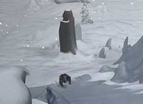

| 概要 | 地図 |
| 淡いヒント集 | ヒント集 | 的確なヒント集 |
| 攻略最短ルート |
| 場所選択に戻る |
雪山
|
線路の終端
厳しい吹雪に、一部をなくした機関車。あなたが歩む道はますます険しくなっていく。そんな状況の中、ついに線路の終端が見えてきた。いよいよ、旅も終わりであろうか? 答えは否である。 ・弟を捜し、彼が恐れているものを調べる ・あたりに鳴り響いている音を止める ・氷の坂を上り、岡の上へ行く ・兄とにらみ合った状況を打開する 
・彼を捜すのは簡単なはずだ。周りが真っ白なために、何を着ていても目立つ。 ・彼が何を恐れているのか調べるのも、難しくないだろう。 ・問題は、彼が恐れている原因である風の音を止める方法である。 ・スノーモービルである。 ・このスノーモービルには色々なものが積まれている。役に立つものがあるはずだ。

・しかし、このスノーモービルにもカンジキは積んでいない。 ・それでは、どうやって坂を上ればよいだろうか? ・まずは弟の恐怖を取り除いてみよう。 
・移動することは、ほぼできない。 ・彼の気をそらす方法も、ほとんどない。 ・手持ちのアイテムを使ってみよう。そのアイテムとは、何だろうか? ・どこかで拾ったものではない。あなたが冒険を始める前から持っていたものだ。
| << 前へ |
|
| 場所選択に戻る |
| 概要 | 地図 |
| 淡いヒント集 | ヒント集 | 的確なヒント集 |
| 攻略最短ルート |
Syberia II
| 目次へ戻る | ページの上部へ |